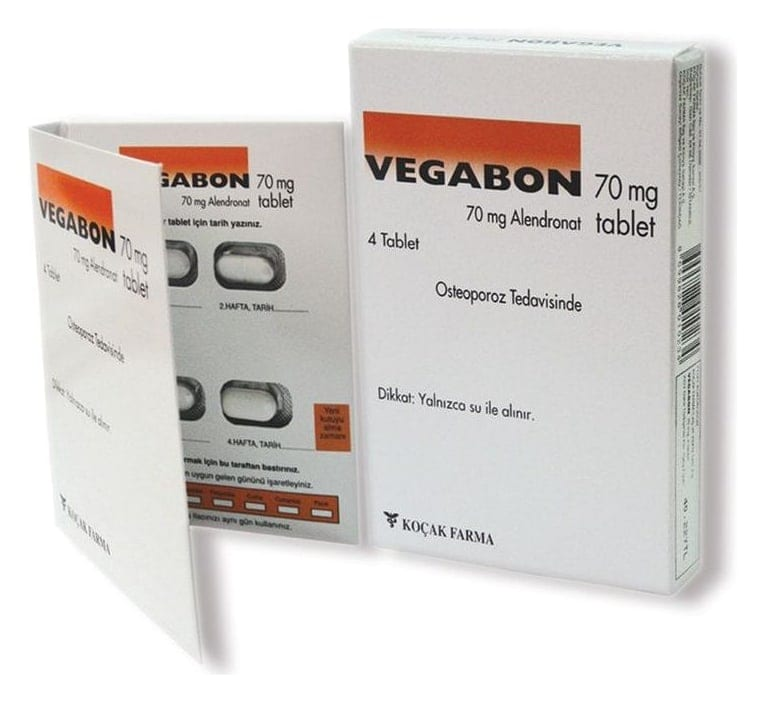

Vegabon 70 mg Tablet, 4 Adet

Ne için kullanılır
KT · Bölüm 1VEGABON’da bulunan alendronat, bifosfonatlar olarak adlandırılan hormon olmayan ilaç sınıfının bir üyesidir. VEGABONmenopoz sonrası, kadınlarda görülen kemik kaybını önler ve kemiğin tekrar yapılanmasına yardımcı olur. Kalça kemiği ve omurga kırığı riskini azaltır. VEGABON kırıkların önlenmesi için erkeklerdeki osteoporozun tedavisinde yararlıdır. VEGABON tablette70 mg Alendronat’a eşdeğer miktarda 91.35 mgAlendronat sodyum trihidratiçeren 4 ve 12tabletlik blister ambalajlarda kullanıma sunulmuştur. Osteoporoz nedir? Osteoporoz, kemiklerin erimesi ve zayıflamasıdır.Menopozsonrasında kadınlarda yaygındır. Ancak erkeklerde de görülebilir.Menopozdayumurtalıklar kadının sağlıklı bir iskelete sahip olmasında yardımcı olan dişilik hormonu östrojeni üretmeyi bırakırlar. Sonuç olarak kemik kaybı görülür ve kemik zayıflar. Bir kadınmenopozadaha erken girerse, daha fazla osteoporoz riski oluşur. Osteoporozun başlangıcında genellikle belirti görülmez. Ancak, tedavi edilmezse kemiklerde kırılma oluşabilir. Kırıklar genellikle ağrı yapsa da, omurga kemiğindeki kırıklar, boy kaybına neden olana kadar fark edilemeyebilir. Kırıklar, bir şey kaldırma gibi olağan günlük faaliyet sırasında ya da genellikle, normal kemiğin kırılmasına neden olmayan küçük yaralanmalardan dolayı oluşabilir. Kırıklar genellikle, kalça,omurga ya da bilekte görülür ve hem ağrıya hem de önemli şekil bozuklukları ve sakatlığa neden olabilir (omurganın eğriliğinden dolayı kambur duruş ve hareket kaybı gibi). Osteoporoz nasıl tedavi edilebilir? Osteoporoz tedavi edilebilir ve tedaviye başlamak için hiçbir zaman geç değildir.VEGABON, hem kemik kaybını önler hem de kaybedilen kemiklerin yeniden yapılmasına yardım eder ve kalça kemiği ve omurgada oluşabilecek kırık olasılığını azaltır. Ayrıca, doktorunuz size yaşam tarzınızda aşağıdaki değişiklikleri yapmanızı önerebilir: Sigarayı bırakma:Sigaranın, kemik kaybı oranını ve bu nedenle kırık riskini artırdığı bilinmektedir. Egzersiz:Kaslar gibi kemiklerin de güçlü ve sağlıklı kalması için egzersize ihtiyacı vardır. Herhangi bir egzersiz programına başlamadan önce doktorunuza danışınız. Dengeli beslenme:Doktorunuz size, beslenme düzeninizi değiştirmenizi ya da besin takviyesi almanızı tavsiye edebilir.